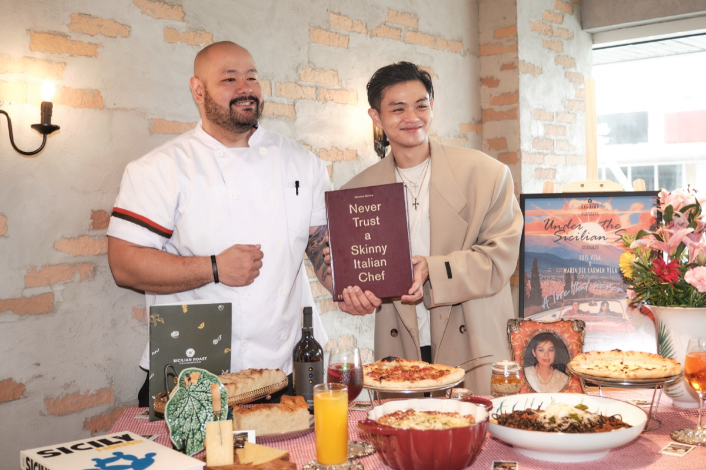
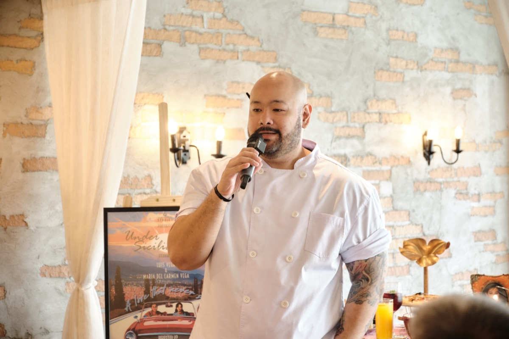
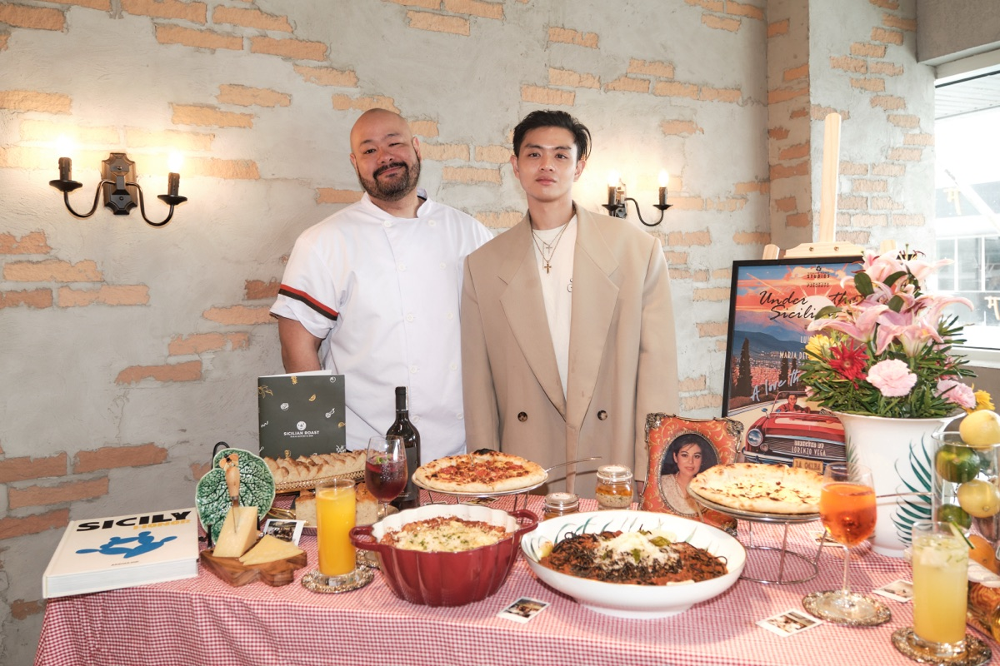
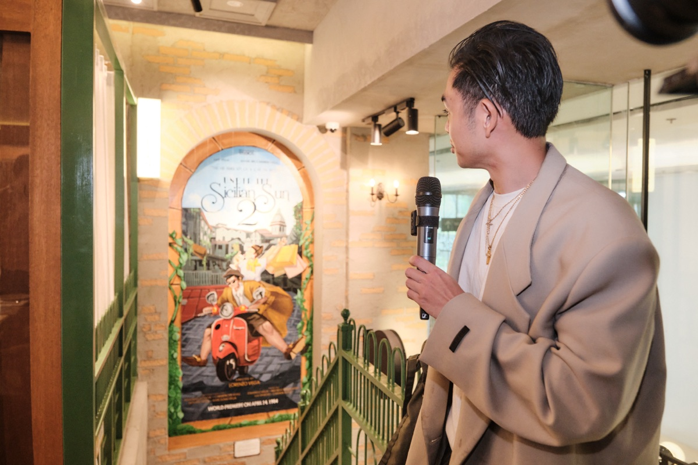

A ten-year milestone. A fourth branch. A city talking.
Sicilian Roast turned ten and opened its fourth Metro Manila branch in Molito Lifestyle Center, Alabang. Our job was to make ten years of quiet, consistent work feel like a Manila food moment, not a footnote.
 Executive Chef Matt Navarro torching a signature steak at the Molito media preview
Executive Chef Matt Navarro torching a signature steak at the Molito media preview
A decade of quiet consistency, hard to dramatise for press.
Sicilian Roast, led by CEO Lorenzo Vega and Executive Chef Matt Navarro, had spent ten years building a loyal regular base across Makati, San Juan and Quezon City. The new fourth branch in Molito Lifestyle Center, Alabang, was paired with a refreshed menu and a revamped space. But "we opened another branch" is not a story food editors clear column inches for.
The opening needed a frame food editors would care about, food creators would actually post about, and Alabang's residential market would notice.

One milestone, three angles, the right rooms.
We framed Molito as a 10-year story with a fourth-branch tipping point, then cut it for three different desks: a business-of-restaurants story for the news pages (a Filipino-Italian brand quietly compounding for a decade), a chef-and-craft feature for lifestyle (Matt Navarro and a refreshed menu), and a "new Alabang spot" piece for food creators with bookable specifics.
Then we ran a media lunch at Molito rather than a press release blast: the kitchen open, the chef in front, the dishes plated. The story became something writers had actually tasted. CEO Lorenzo Vega added a personal layer with a commissioned mural tribute to his late mother, giving the lifestyle and human-interest desks a second, distinct angle.
- A milestone narrative (10 years + 4th branch) instead of a "new branch" announcement
- Angles cut for three desks: news, lifestyle, and food creator
- A hosted media lunch at Molito with chef Matt Navarro on the record
- A founder-personal angle (mural tribute) for the lifestyle and human-interest desks
ABS-CBN, Manila Times, Manila Standard, Malaya, plus the Manila food press.
The Molito launch ran in ABS-CBN Lifestyle ("Alabang eats: 10 years on, Sicilian Roast writes next chapter in Molito", 2.67M unique visits), The Manila Times, Manila Standard, Malaya Business Insight ("High Four: Sicilian Roast marks 10 years and 4th store with fresh flavors"), Orange Magazine, Village Pipol (online + Instagram + Facebook), Wazzup.PH, Adobo Magazine, Earthlingorgeous, Dot Daily Dose, The Metro Edit, A LifeStyle Compass, TAP Magazine, Anjie Mismo, Manila Republic, Tito Spidey, Ryan San Juan and WALPHS, plus creator posts from RichieZ (Picky Eater), LionhearTV (2.6M followers), Ralph Sarza and the ABS-CBN News page.
34 placements logged, 6.29M combined audience, 105K estimated views, max domain authority of 87 (ABS-CBN). All measured by CoverageBook.
Molito launch, in photos.
Chef Matt Navarro in front of the kitchen. CEO Lorenzo Vega on the brand's 10-year story and the personal mural tribute to his late mother. Dishes plated for media in real time.



Broadcast & video
Food creators showed up with cameras. The Earthlingorgeous food vlog from the media lunch did 600+ views on YouTube and ran alongside her written review.

Ten years. 38+ placements. A city's food desks at one table.
MVR × Sicilian Roast · Nov 2025
Coverage
A sample of where the Molito launch ran. Click through and read.
Headline numbers from the Sicilian Roast Molito Launch report (CoverageBook, Nov–Dec 2025). Additional placements verified via web sweep, Dec 2025 and Mar 2026. Photos courtesy of Sicilian Roast.